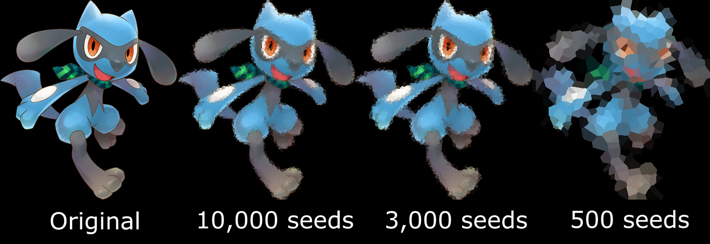

Le projet "ImageToVoronoi" utilise des diagrammes de Voronoi pour générer des images modifiés avec un calculs de voisins liés à des graines aléatoires.
Technologies utilisées : Python, algorithmes de traitement d'image, diagrammes de Voronoi.
Ce projet explore la manière de modifier des images dans l'objectif de générer des versions alternatives et différentes.
